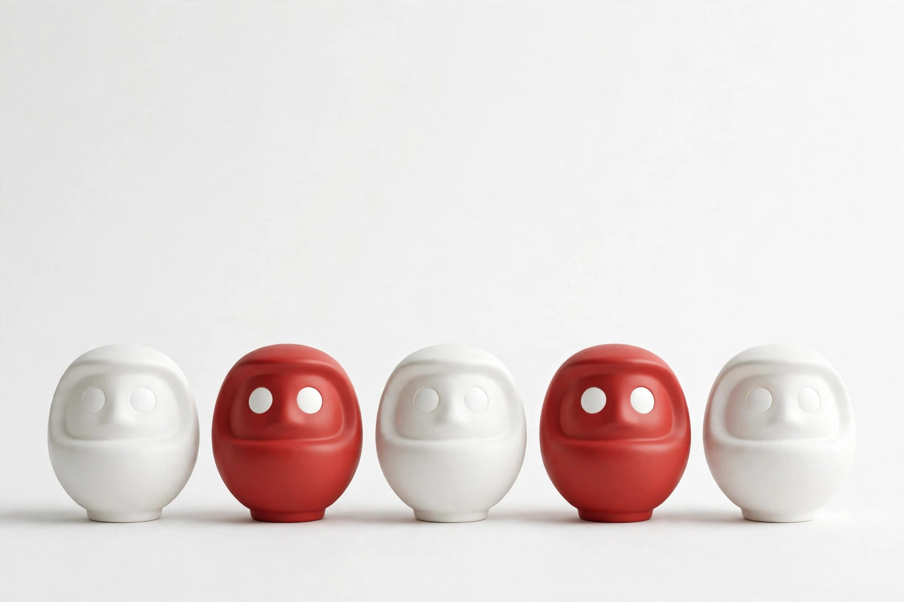
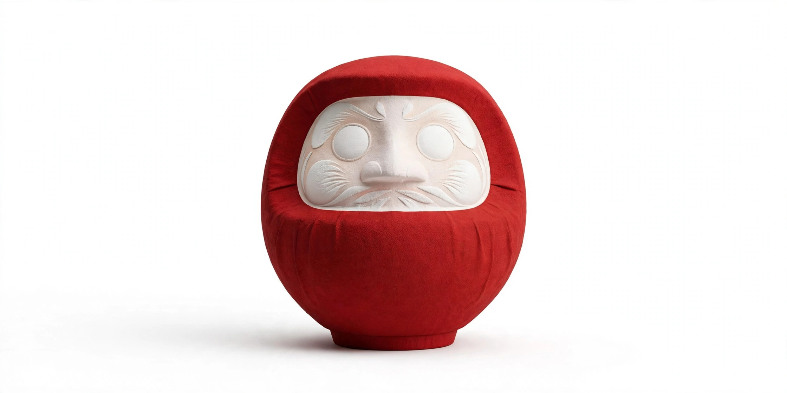
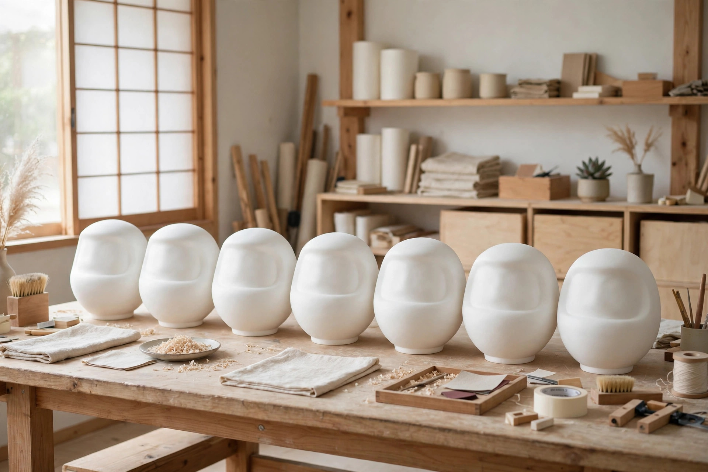
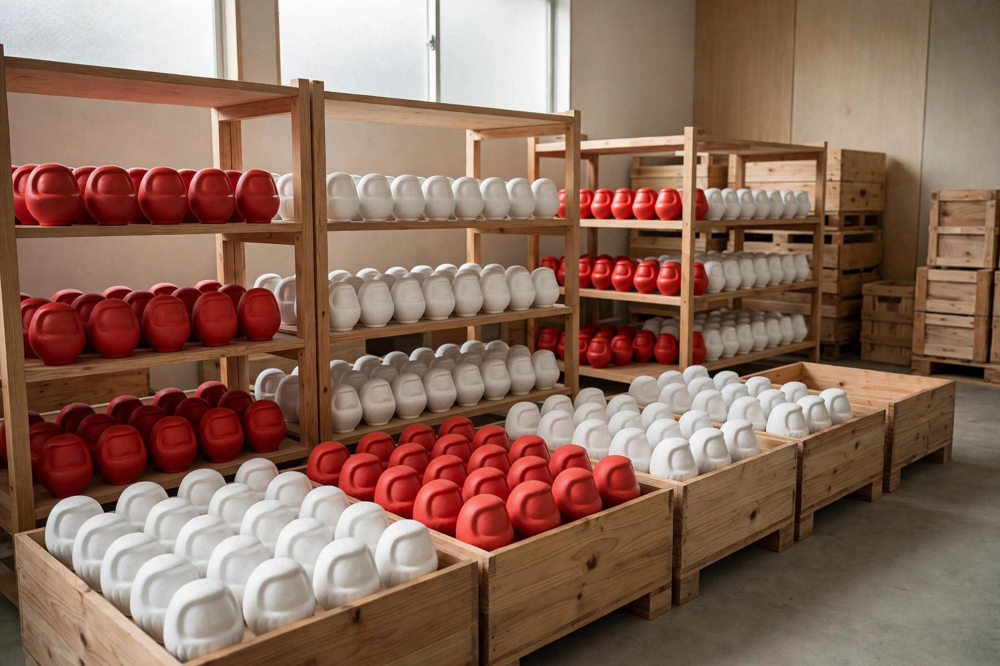
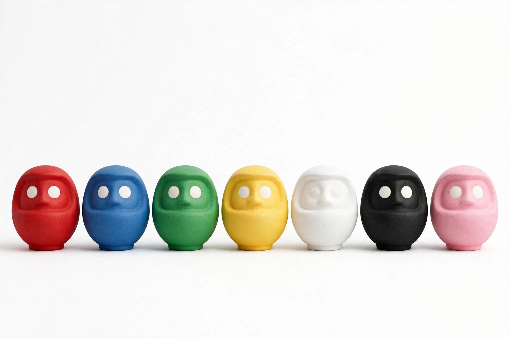
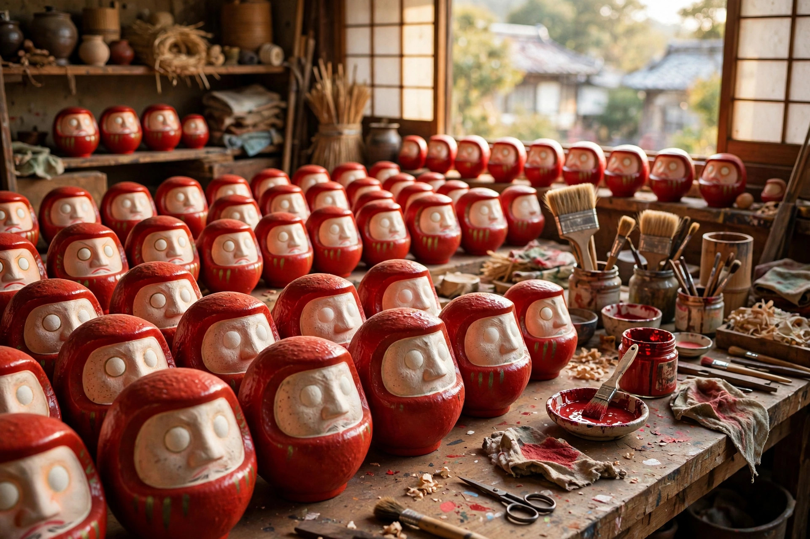
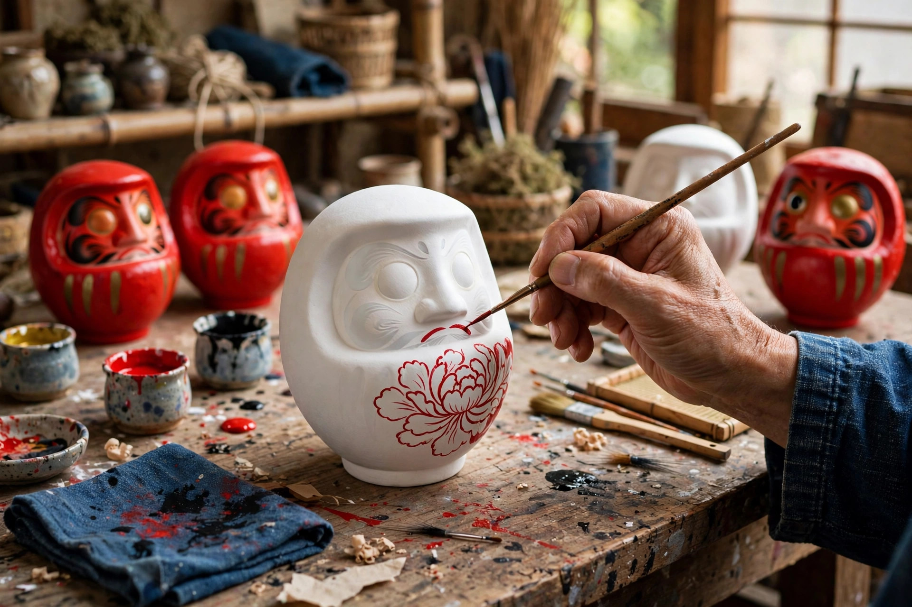
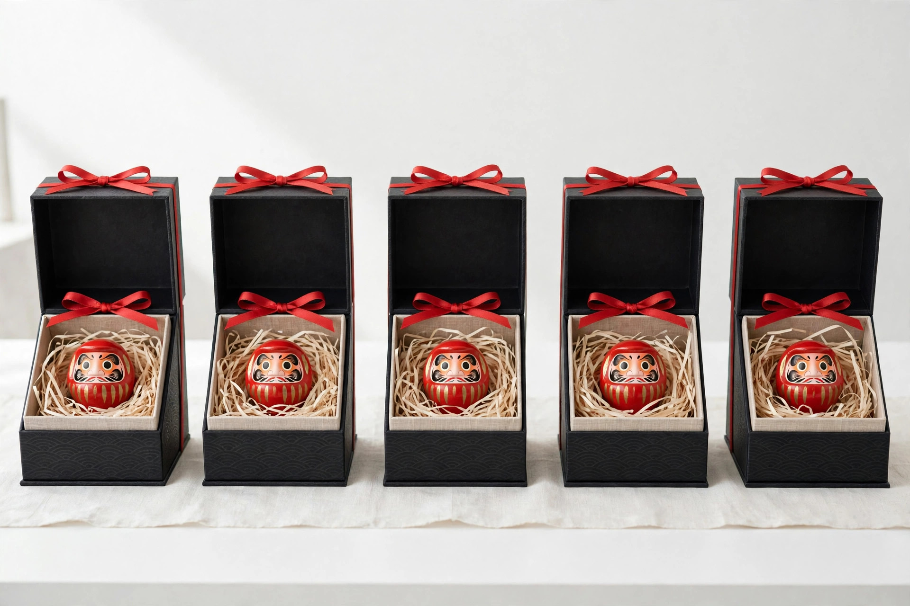

BUSINESS 01
ブランド｜オリジナルだるま
定番の赤に加え、現代の暮らしに馴染む色とサイズを企画した自社ブランドのだるまを展開。贈答用パッケージや、目標達成を記録するカードを添えたセット商品など、「飾る・贈る・使う」場面から逆算した商品づくりを行います。
取扱いのお問い合わせ →
DARUMA WORKS
転んでも起き上がるだるまは、目標に向かう人の背中を押し続けてきた日本の縁起物です。私たちは、職人の手仕事を守りながら、だるまの新しい届け方をつくります。
VISION
七転び八起きの精神を、
次の世代と、世界の日常へ。
だるまは、願いを込めて目を入れ、叶ったらもう一方の目を入れる「参加型」の縁起物です。その文化は、受験や商売繁盛のお守りとしてだけでなく、目標管理の道具として海外でも静かな広がりを見せています。一方で、産地の職人の高齢化と後継者不足は深刻です。DARUMA WORKSは、卸売・OEM・自社ブランド・メディアの4つの事業を通じて需要を生み出し、作り手に正当な対価が戻る循環をつくることで、この文化を持続可能な産業として残すことを目指します。
産地の工房と直接取引し、適正な価格と継続的な発注で、技術と雇用を次代につなぎます。
色の意味、サイズの選び方、目入れの作法。一次情報を丁寧に整理し、正しい知識とともに届けます。
海外の小売・イベント・贈答需要に応え、日本の縁起物を世界の「目標達成の象徴」にします。
BUSINESS
ブランド、法人・OEM、卸売、メディア。だるまを「つくる・届ける・伝える」4つの事業を展開しています。

BUSINESS 01
定番の赤に加え、現代の暮らしに馴染む色とサイズを企画した自社ブランドのだるまを展開。贈答用パッケージや、目標達成を記録するカードを添えたセット商品など、「飾る・贈る・使う」場面から逆算した商品づくりを行います。
取扱いのお問い合わせ →
BUSINESS 02
企業ロゴや文字の名入れ、周年記念・ノベルティ・選挙事務所向け、店舗の開店祝いなど、法人需要に応えるオリジナルだるまの制作に対応します。小ロットの相談から、デザイン案の作成、納期の調整まで一貫してサポートします。
OEMのご相談 →
BUSINESS 03
小売店・神社仏閣の授与所・イベント事業者向けに、定番サイズのだるまを安定供給します。海外向けには、破損しにくい梱包仕様と英語の説明資料を用意し、輸出手続きの相談にも応じます。在庫と納期はお問い合わせください。
卸条件のご相談 →
BUSINESS 04
色の意味、サイズの選び方、目入れと供養の作法、産地と職人の仕事。だるまにまつわる一次情報を、専門メディアとして継続的に発信します。販売の前に「正しく知る」体験を提供することが、産地全体の信頼につながると考えています。
読みもの一覧 →ABOUT DARUMA
色の意味、サイズの目安、目入れの作法。だるまを選ぶ前に知っておきたい基本情報をまとめました。

だるまは、禅宗の開祖・達磨大師の座禅姿をかたどった張り子の人形です。重心が低く、倒しても起き上がる構造から「七転び八起き」の象徴とされ、江戸時代以降、商売繁盛や開運招福の縁起物として親しまれてきました。現在の代表的な産地は群馬県高崎市で、全国の生産の多くを占めます。白い目に自分で墨を入れるのが特徴で、願いを込める行為そのものが、だるま文化の中心にあります。
色ごとに込められた願いが異なります。贈る相手や叶えたい願いに合わせて選ぶのが、だるまらしい楽しみ方です。意味づけは地域や作り手によって多少異なります。
開運招福・家内安全の定番色。魔除けの色ともされ、あらゆる願いの基本です。
目標達成・合格祈願。純粋さと始まりを表し、受験や資格取得のお守りに。
厄除け・除災招福。引き締まった佇まいで、店舗や事務所の守り神にも選ばれます。
金運上昇・財運。商売繁盛の願いと相性がよく、開店祝いの定番でもあります。
仕事運・出世。冷静さと信頼を表し、昇進や転職の節目に贈られます。
健康・長寿。穏やかな実りの色で、ご家族の健康祈願に選ばれます。
幸運・夢の実現。明るさをもたらす色として、挑戦する人への贈り物に。
恋愛成就・良縁。やさしい色合いで、出会いや結婚の願いを込める色です。
だるまのサイズは「号数」で表され、号数が大きいほど高さも大きくなります。以下は高さの目安です（メーカー・工房により数センチ異なる場合があります）。
| 号数 | 高さの目安 | おすすめの用途 |
|---|---|---|
| 0〜1号 | 約3.5〜6cm | てのひらサイズ。ストラップやミニギフト、まとめ買い用 |
| 2号 | 約9cm | デスクや玄関に。初めてのだるまにちょうどよいサイズ |
| 3号 | 約12cm | 受験・合格祈願の定番。贈答にも選ばれます |
| 4号 | 約15cm | 店舗のレジ横や事務所の棚に |
| 5号 | 約18cm | 開店祝い・周年記念など、存在感のある贈答用 |
| 6〜7号 | 約21〜24cm | 神棚や店頭ディスプレイに |
| 8〜10号 | 約27〜30cm | 事務所の顔として。団体・法人の願掛け用 |
| 12号以上 | 約36cm〜 | イベントや式典、大きな願いのシンボルに（特注対応も可） |
※高さは一般的な目安です。実際の寸法は製造元・型により異なります。用途に迷う場合はお問い合わせください。
だるまの白い目に墨を入れる「目入れ（開眼）」は、目標を定めて決意する儀式です。基本の流れは次の3ステップです。
一
叶えたい目標をひとつに絞り、心に念じながら、だるまの左目（向かって右側の目と説明されることもあります）に墨やペンで黒目を描き入れます。具体的な目標ほど、後の努力の指針になります。
二
目を入れたら、毎日目に触れる場所に置きます。だるまの視線が、目標を忘れずに行動し続けるための静かなリマインダーになります。
三
目標が叶ったら、もう一方の目を入れて両目を開眼させます。役目を終えただるまは、購入した寺社や神社のお焚き上げ、だるま供養に納めるのが習わしです。1年で叶わなかった場合も、感謝を込めて供養し、新しいだるま迎えることがあります。
※目を入れる側や順序には地域・流派による違いがあります。贈答先の慣習が分かる場合はそれに合わせてください。詳しくはブログ記事「目入れの作法と、役目を終えたら」もご覧ください。
READING
だるまの選び方から作法、産地の話まで。専門メディアとして一次情報を発信しています。

少林山達磨寺と天明の飢饉から始まった産地の歩みと、眉は鶴・髭は亀という縁起の意匠、高崎が日本一の産地である理由を解説します。

ロゴや文字を入れる方法から、デザイン確認・納品までの6ステップと、法人発注で失敗しない注意点をまとめました。

捨てられず、飾られ続ける記念品とは。周年記念やノベルティにだるまが選ばれる理由と活用シーンを紹介します。
NEWS
「読みもの」に新しい記事を10本追加しました。高崎だるまの歴史、名入れ・OEMの発注ガイド、だるまの値段の相場など、選ぶ・贈る・発注する際に役立つ情報を公開しています。
DARUMA WORKSのウェブサイトを開設しました。事業内容とだるまの基礎知識を公開しています。
年末年始のノベルティ・記念品向けに、名入れだるまの受付を開始しました。納期のご相談はお早めにどうぞ。
専門メディア「読みもの」を開設しました。だるまの色・サイズ・作法の解説記事を公開しています。